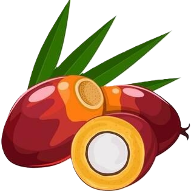

Pengenalan Kelapa SawitKelapa sawit adalah salah satu komoditas perkebunan terpenting di Indonesia. Yuk, kenali lebih dalam!
Apa itu Kelapa Sawit?
Kelapa sawit (Elaeis guineensis) adalah tanaman tropis penghasil minyak nabati terbesar di dunia. Berasal dari Afrika Barat, kini banyak dibudidayakan di Asia Tenggara.
Indonesia & Sawit
Indonesia adalah produsen minyak sawit terbesar di dunia, menyumbang sekitar 55% dari total produksi global. Luas perkebunan mencapai lebih dari 16 juta hektar.
Produk Turunan
Dari kelapa sawit dihasilkan minyak goreng, margarin, sabun, kosmetik, hingga bahan bakar nabati (biodiesel). Sangat beragam kegunaannya!

Sejarah Singkat
Kelapa sawit pertama kali masuk ke Indonesia sekitar tahun 1848 di Kebun Raya Bogor. Perkebunan komersial mulai berkembang pada awal abad ke-20.

Syarat Tumbuh
Tumbuh optimal di iklim tropis dengan curah hujan 2.000–2.500 mm/tahun, suhu 24–28°C, dan ketinggian 0–500 mdpl. Cocok dengan iklim Indonesia!

Nilai Ekonomi
Industri sawit menyerap lebih dari 16 juta tenaga kerja di Indonesia dan menjadi penyumbang devisa ekspor terbesar dalam sektor pertanian.